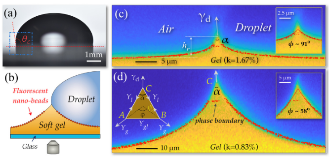
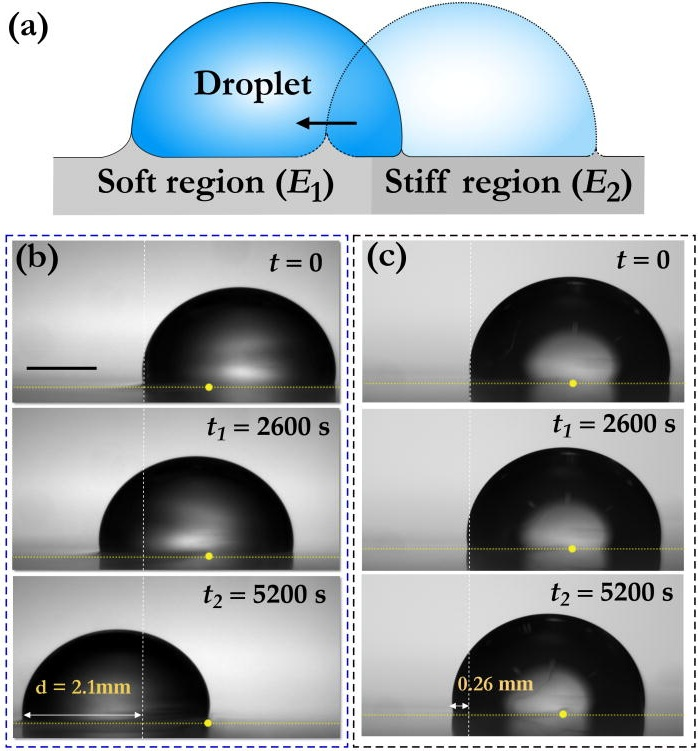
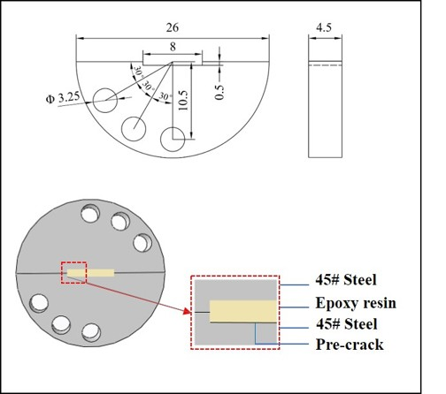
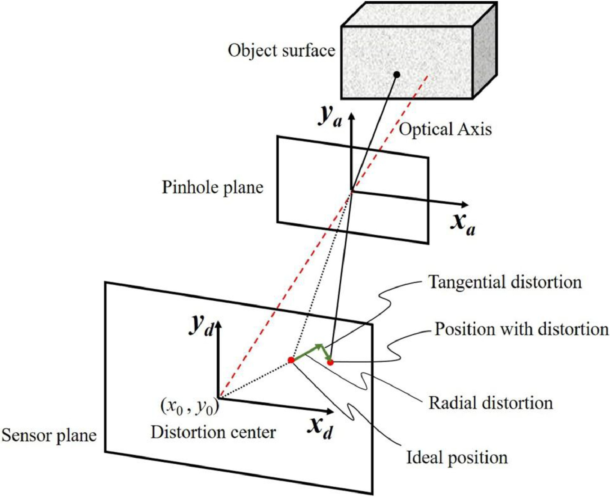
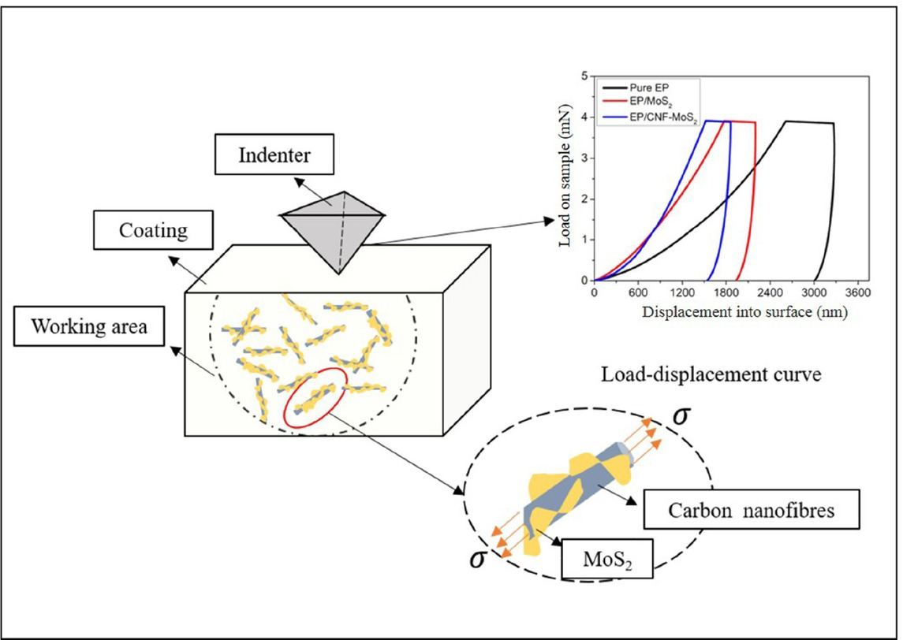
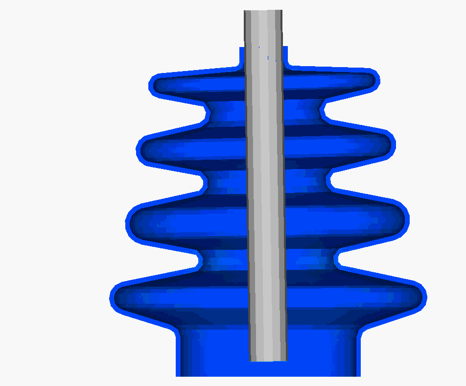
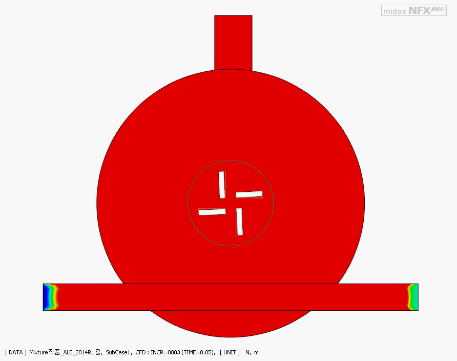

Micro-DIC and speckle metrology微尺度 DIC 与散斑测量
Full-field displacement and strain measurement, crack-tip tracking, and lens-distortion correction using speckles and gratings.利用散斑与光栅进行全场位移、应变和裂尖测量，并校正显微镜头畸变。
Three connected directions三个相互衔接的方向
My research connects soft-matter interfacial physics with non-contact optical measurement and computational mechanics. Experiments reveal local deformation and transport, while mechanics and simulation test the governing mechanisms.我的研究将软物质界面物理、非接触式光学测量与计算力学结合起来：实验解析局部变形与输运，力学理论和仿真用于检验其主导机制。



Direction 01 · Doctoral research方向 01 · 博士阶段
I study how liquid contact reorganizes compliant polymer networks. Using in-situ confocal imaging, interferometric measurements, and mechanics-based models, I investigate wetting-induced phase separation, surface-stress balance, poroelastic transport of free chains, stiffness-gradient-driven droplet motion, and particle adhesion on soft gels.
我研究液体接触如何重组柔性聚合物网络，并结合原位共聚焦成像、干涉测量和力学模型，分析润湿诱导相分离、表面应力平衡、自由链的多孔弹性输运、刚度梯度驱动的液滴运动以及软凝胶表面的颗粒黏附。



Direction 02 · Master's research方向 02 · 硕士阶段
My master's work used non-contact optical methods to characterize interfacial deformation, failure, and fracture. I work with micro-scale digital image correlation, shearography, confocal microscopy, white-light interferometry, and basic photolithography. These measurements are combined with interface and fracture mechanics to quantify crack-tip opening displacement, mixed-mode stress-intensity factors, coating fracture toughness, residual stress, and optical-system errors.
硕士阶段，我利用非接触式光学方法表征界面变形、失效与断裂，掌握微尺度数字图像相关、剪切散斑干涉、激光共聚焦、白光干涉以及基础光刻技术。相关测量与界面力学、断裂力学相结合，用于量化裂纹尖端张开位移、复合型应力强度因子、涂层断裂韧度、残余应力及光学系统误差。


Direction 03 · Across research and engineering方向 03 · 贯穿科研与工程实践
I use finite-element and multiphysics models to design experiments, verify optical measurements, and test physical interpretations. My experience includes nonlinear contact, cohesive-zone modelling, structural statics and dynamics, buckling, fluid–structure interaction, moving-mesh CFD, and mixture or multiphase flow. These tools connect laboratory observations with material and engineering-system behaviour.
我使用有限元与多物理场模型设计实验、验证光学测量结果并检验物理解释。相关经验包括非线性接触、内聚区模型、结构静力与动力分析、屈曲、流固耦合、动网格 CFD 以及混合物和多相流分析，用以连接实验室观测与材料、工程系统的实际行为。
Full-field displacement and strain measurement, crack-tip tracking, and lens-distortion correction using speckles and gratings.利用散斑与光栅进行全场位移、应变和裂尖测量，并校正显微镜头畸变。
In-situ surface-profile measurements using confocal microscopy, shearography, and white-light interferometry.利用激光共聚焦、剪切散斑干涉和白光干涉开展原位表面形貌测量。
Mixed-mode fracture, adhesion, residual stress, contact mechanics, and mechanical characterization of coatings and soft materials.研究复合型断裂、黏附、残余应力、接触力学以及涂层和软材料的力学表征。
Basic photolithography, micro-scale pattern preparation, multi-angle loading fixtures, and in-situ optical test design.基础光刻、微尺度图案制备、多角度加载夹具及原位光学测试装置设计。
Linear and nonlinear structural analysis, contact, cohesive zones, dynamics, and buckling for experimental and engineering problems.面向实验与工程问题的线性和非线性结构、接触、内聚区、动力学及屈曲分析。
Fluid–structure interaction, moving meshes, conjugate heat transfer, mixture flow, and multiphase transport.流固耦合、动网格、共轭传热、混合物流动与多相输运分析。